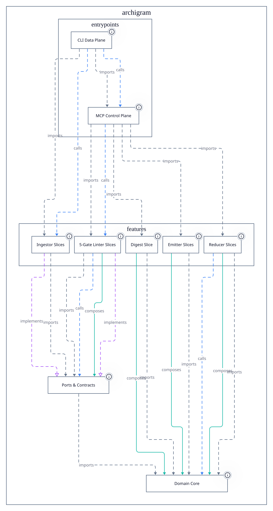

Hand-drawn diagrams go stale
Diagrams drawn in Excalidraw, Miro or Markdown have no link to the code. After a refactor, arrows point at deleted modules and new dependencies are missing.
ArchiGram reads your code and its runtime traces and compiles them into small, readable architecture diagrams. You choose what each diagram shows with a short spec, and five checks make sure it stays true to the code.
Teams want diagrams that stay true as the code changes and are small enough to read. Today they usually fail in one of three ways.
Diagrams drawn in Excalidraw, Miro or Markdown have no link to the code. After a refactor, arrows point at deleted modules and new dependencies are missing.
Dependency and trace visualizers put every symbol on one canvas, which is 361 symbols for ArchiGram itself. That is too much to read, and too big for Gitea’s 5,000-character Mermaid limit.
An LLM writing Mermaid or D2 directly invents classes, drops real dependencies while summarizing, breaks renderer syntax, and draws a different diagram on every run.
Only deterministic programs read the code. Neither people nor AI agents write diagram
syntax: they edit a declarative YAML spec through CLI commands such as
archigram curate, which prune leaves, collapse groups or fold loops. Before
a diagram is written, five gates check it:
An agent never draws. It adds one rule to the spec, ArchiGram recompiles the diagram
from the code, and the five gates decide whether it may be written. These are eight real
runs on the six-module shop package from the quickstart.
rules: []The boxes, arrows and messages come from running each spec in examples/agent-moves; only the layout is fixed by hand so you can follow each change. The gates check rules against the contract, not the contract against your intent, so review changes to the spec like code.
Every diagram below is compiled from ArchiGram’s own code, or from one recorded run of it, and re-checked on every push. If the code changes and a picture would become wrong, the build fails.
Deterministic extractors read the Python AST, OpenTelemetry spans, SCIP indexes, DOT graphs and class models.
ingest_python · ingest_otel · ingest_scip · ingest_dot · ingest_class
Everything becomes a CanonicalIR, a structural graph or an interaction
trace, with every node stamped by where it came from.
A YAML spec (CurationSpecV1) prunes, bypasses and collapses the graph.
Traces are compacted by R1–R6 loop folding and ordering rules.
Grounding, protected boundaries, topology and ordering, size budgets and syntax are all checked before a single byte is written.
lint_grounding · lint_topology · lint_budget · lint_syntaxMermaid, D2, PlantUML, LikeC4 and Graphviz DOT are rendered deterministically, so a rerun produces identical files.
emit_mermaid · emit_d2 · emit_plantuml · emit_likec4
Four rings: entrypoints, features, ports and domain. Every import points toward the
domain, and the domain and ports may not import the CLI or MCP frameworks,
subprocess, or any outer ring. The CLI and the MCP server are
replaceable adapters around them.
Each ingestor, reducer, gate and emitter lives in its own vertical slice and may only import the domain and ports. Adding a seventeenth slice never touches its siblings.
Enforced by import-linter · independence contract
Every ingestor produces the same CanonicalIR and every emitter reads it,
so supporting a new input or output format means adding one slice, not rewriting the
pipeline.
archigram.ports
Nine capability groups inside the four rings. Read it from the outside in: the CLI and the MCP server call features, features call ports, and ports describe the domain.
Read the L0 guide →
Ingestors, reducers, gates and emitters side by side, each importing only the domain and ports. A contributor adding an input format, a diagram target or a lint rule works inside one slice and breaks no other.
Read the L1 guide →
A focused neighbourhood of the reducers: graph simplification by strongly connected
components and transitive reduction, and the R1–R6 rules that compact a
runtime trace while keeping its causal order.

ArchiGram runs itself under Python’s sys.monitoring, records the call
tree, compacts it to 15 participants and 48 events, and draws it with the same
pipeline you just saw. Nobody typed this sequence diagram.

This is ArchiGram’s own code. Stage 1 is the raw graph a plain extractor produces. Stage 2 is the same graph, colored by what the spec does to each node: remove, bypass, collapse or keep. Stage 3 is the result that passed all five gates. The CLI commands that produced it are listed below. Click a diagram to zoom.
Boxes and arrows cannot show what happens first. From a recorded run, ArchiGram also emits animated SVGs, driven by CSS alone, that play in Markdown, Gitea, GitHub and browsers without any JavaScript.